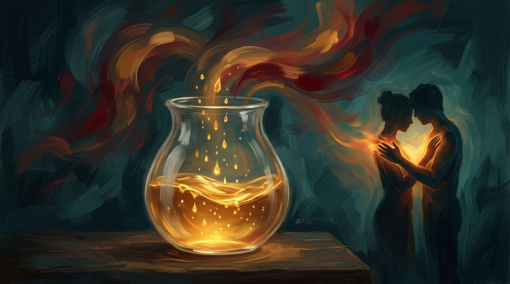

Esplosioni Emotive
Scopri come funziona l'onda emotiva tribale nel sistema BG5 e Human Design e come gestire l'accumulo di tensione nelle relazioni.

Quella tensione che cresce senza motivo apparente
Ti è mai capitato di sentirti tranquillo per giorni interi e poi, all'improvviso, esplodere per un dettaglio insignificante? Un bicchiere lasciato sul tavolo, una risposta data con un tono leggermente sbagliato, un ritardo di cinque minuti. Il problema non era quel dettaglio. Il problema era tutto quello che si era accumulato prima, silenziosamente, sotto la superficie.
Se ti riconosci in questa dinamica, è possibile che nel tuo Success Code (BodyGraph in Human Design) sia presente un'onda emotiva tribale. E capire come funziona questa onda cambia radicalmente il modo in cui gestisci le relazioni, il lavoro e la vita domestica.
Questo articolo ti spiega il meccanismo preciso dell'onda tribale, ti mostra come si manifesta nella quotidianità e ti offre uno strumento concreto per gestirla prima che prenda il sopravvento.
Come funziona l'onda emotiva tribale nel sistema BG5
Nel sistema BG5, il Centro Energetico del Plesso Solare (Centro del Plesso Solare in Human Design) è il motore emotivo. Quando questo centro è definito nel tuo Success Code, la tua Autorità Decisionale (Autorità Interiore in Human Design) è emotiva: ogni decisione richiede tempo, perché deve attraversare un ciclo di onde prima di raggiungere chiarezza.
L'onda emotiva tribale è una delle tre tipologie di onda legate al Plesso Solare. Le altre due sono l'onda individuale e l'onda collettiva. Ognuna ha un ritmo diverso, un comportamento diverso e un effetto diverso sulla persona che la vive.
L'onda tribale ha una caratteristica specifica: funziona per accumulo progressivo. Immagina un contenitore che raccoglie gocce d'acqua, una alla volta. Ogni goccia rappresenta una piccola frustrazione, un bisogno insoddisfatto, una parola trattenuta. Il livello sale lentamente. Dall'esterno, nulla sembra cambiare. All'interno, la pressione aumenta.
Questo meccanismo è diverso dall'onda individuale, che oscilla tra picchi di euforia e momenti di malinconia in modo ciclico e imprevedibile. È diverso anche dall'onda collettiva, che si muove in modo più lineare, legata ad aspettative sul futuro. L'onda tribale, invece, è silenziosa. Sale un gradino alla volta. E quando il contenitore è pieno, il rilascio è improvviso.
Perché esplodi proprio con le persone a cui tieni di più
L'onda tribale è legata alle Porte (Gate in Human Design) che si trovano nei canali del circuito tribale. Questi canali governano i legami stretti: famiglia, partner, amici intimi, colleghi con cui lavori ogni giorno. Il circuito tribale riguarda il sostegno reciproco, la protezione del gruppo, la lealtà.
Questo significa che l'accumulo di tensione dell'onda tribale avviene quasi esclusivamente nelle relazioni ravvicinate. Il collega che ti taglia la parola durante una riunione. Il partner che dimentica qualcosa che avevi chiesto tre volte. Il familiare che commenta una tua scelta senza che tu l'abbia chiesto. Ciascuno di questi episodi, preso singolarmente, è gestibile. Sommati nel tempo, riempiono il contenitore.
Ecco perché la persona che riceve l'esplosione è quasi sempre qualcuno vicino. Il tuo partner si sente dire "non ne posso più" per un calzino sul pavimento. Un collaboratore riceve una risposta sproporzionata per un errore minore. Tu stesso ti chiedi perché hai reagito così. La risposta è meccanica: non stavi reagendo a quell'episodio. Stavi rilasciando tutta la pressione accumulata fino a quel momento.
Questo schema crea un circolo specifico. La persona vicina a te si sente attaccata ingiustamente. Tu ti senti in colpa per la reazione eccessiva. Entrambi vi allontanate. La distanza riduce il contatto. Meno contatto significa meno occasioni di rilascio graduale. Il contenitore ricomincia a riempirsi.
Il rilascio graduale attraverso il contatto fisico
Il meccanismo dell'onda tribale ha una valvola di sfogo precisa: il tatto. Le persone con un'onda emotiva tribale definita nel loro Success Code rispondono al contatto fisico in modo diretto. Un tocco intenzionale, fatto con presenza, abbassa il livello del contenitore prima che raggiunga il punto di rottura.
Questo ha una spiegazione pratica. Il circuito tribale è il circuito del corpo, della fisicità, del sostegno tangibile. Le parole, per quanto sincere, non hanno lo stesso effetto di un gesto fisico su chi vive questa onda. Dire "ti capisco" può essere utile. Mettere una mano sulla spalla di quella persona mentre glielo dici cambia la risposta del suo sistema nervoso.
Attenzione: il contatto deve avvenire prima dell'esplosione. Questo è il punto che fa la differenza. Quando l'onda ha già raggiunto il picco e il rilascio è in corso, il tocco viene percepito come invasivo. La persona in piena esplosione emotiva tribale ha bisogno di spazio per completare lo scarico. Intervenire in quel momento, anche con le migliori intenzioni, può amplificare la reazione.
Il contatto funziona come strumento preventivo. Un abbraccio la sera, senza motivo apparente. Una mano sulla schiena mentre state cucinando insieme. Una carezza sul braccio mentre guardate un film. Questi gesti, ripetuti con regolarità, mantengono il livello del contenitore basso. Non eliminano la natura dell'onda, che continuerà sempre a raccogliere tensione. Riducono la quantità accumulata.
Cosa succede quando ignori il funzionamento della tua onda
Se non sai che la tua emotività funziona per accumulo, interpreti le tue esplosioni come difetti caratteriali. Ti convinci di essere una persona irascibile, instabile o difficile. Inizi a costruire strategie di compensazione: reprimi le emozioni, eviti i conflitti, ti chiudi.
La repressione è l'opposto di ciò che serve all'onda tribale. Trattenere le emozioni equivale a sigillare il contenitore. La pressione non sparisce. Continua a salire. L'unica differenza è che l'esplosione, quando arriva, è più violenta. Oppure si trasforma in implosione: la tensione si riversa all'interno. Stanchezza cronica, irritabilità diffusa, sensazione di svuotamento senza una causa identificabile.
In ambito lavorativo, questo schema ha conseguenze concrete. Un libero professionista con un'onda tribale che lavora in isolamento, senza contatto fisico regolare con persone care, accumula tensione senza punti di rilascio. Le riunioni con i clienti diventano il terreno su cui quella tensione si scarica. Un tono troppo secco in una email. Un'impazienza durante una call. Una decisione presa di impulso per togliersi una situazione di dosso.
Per i Tipi di Carriera (Tipi in Human Design) che dipendono dalla relazione con l'altro, come le Guide (Proiettori in Human Design), questo effetto si amplifica. La Guida ha bisogno di essere riconosciuta e invitata. Se la sua onda tribale è in fase di accumulo avanzato, il bisogno di riconoscimento si mescola con la frustrazione trattenuta. Il risultato è una comunicazione distorta: il messaggio che vuoi trasmettere arriva carico di un'urgenza emotiva che non appartiene a quel momento.
Come riconoscere l'accumulo prima che diventi esplosione
Il primo segnale è la sproporzione tra stimolo e risposta interna. Se un evento oggettivamente piccolo ti provoca un'irritazione che senti nel corpo, nel petto, nello stomaco, quello è un indicatore. Il tuo contenitore è quasi pieno.
Il secondo segnale è la generalizzazione. Quando inizi a pensare in termini di "sempre" e "mai" riguardo a una persona vicina, stai proiettando l'accumulo su un singolo bersaglio. "Non mi ascolti mai." "Fai sempre la stessa cosa." Queste frasi non descrivono la realtà. Descrivono il livello di tensione nel tuo sistema emotivo.
Il terzo segnale è il ritiro fisico. Quando il contenitore è in fase avanzata di riempimento, il corpo tende a chiudersi. Incroci le braccia più spesso. Eviti il contatto visivo. Ti siedi più lontano dall'altra persona sul divano. Questi micro-comportamenti sono il tuo sistema che cerca di proteggersi dall'esplosione imminente, riducendo gli stimoli relazionali.
Se impari a leggere questi segnali, hai una finestra temporale per agire. Puoi chiedere un contatto fisico al partner, a un amico, a un familiare. Puoi comunicare quello che senti in modo diretto: "Ho accumulato tensione. Ho bisogno di un abbraccio." Questa frase, detta prima dell'esplosione, è uno strumento concreto.
Il ruolo del partner e della cerchia stretta
Se vivi con una persona che ha un'onda emotiva tribale, hai un ruolo attivo nella gestione di quel meccanismo. Questo non significa che sei responsabile delle sue emozioni. Significa che il tuo contatto fisico ha un effetto misurabile sul suo equilibrio emotivo.
Capire questo cambia la dinamica. L'abbraccio serale smette di essere un gesto romantico e diventa un atto funzionale. La mano sulla spalla prima di uscire di casa non è cortesia. È manutenzione della relazione.
Per chi lavora in team, la stessa logica si applica in modo diverso. Il contatto fisico tra colleghi ha confini culturali e personali che vanno rispettati. In un contesto professionale, il rilascio tribale può avvenire attraverso la prossimità fisica, la condivisione di uno spazio, la presenza tangibile. Un Costruttore Classico (Generatore Puro in Human Design) con un'onda tribale che lavora da remoto cinque giorni su cinque potrebbe beneficiare di almeno una giornata settimanale in co-working o in ufficio. La vicinanza fisica con altri corpi, anche senza contatto diretto, offre un minimo di sfogo al sistema tribale.
Cosa puoi fare adesso
Se hai letto questo articolo e ti sei riconosciuto nei meccanismi descritti, il passo successivo è verificare se nel tuo Success Code è presente un'onda emotiva tribale e quali Porte e Canali specifici la compongono. Ogni configurazione è unica: la posizione dell'onda nel tuo disegno determina in quali aree della vita si manifesta con più intensità e quali strategie di rilascio funzionano meglio per te.
Valentina Russo, analista certificata BG5 e Human Design, lavora esattamente su questo. In una sessione BG5 (Reading Human Design) individuale, analizza il tuo Success Code e ti restituisce una mappa precisa della tua meccanica emotiva. Non interpretazioni generiche. I tuoi canali, le tue porte, il tuo ritmo specifico.
Se vuoi smettere di sentirti in balia di reazioni che non capisci e iniziare a lavorare con il tuo sistema emotivo, contatta Valentina per prenotare un'analisi BG5. Puoi farlo dal suo sito o scrivendole direttamente. Porta con te la tua data, ora e luogo di nascita: sono i dati necessari per calcolare il tuo Success Code.
Domande Frequenti
Cos'è l'onda emotiva tribale nel sistema BG5?
L'onda emotiva tribale è una delle tre tipologie di onda legate al Centro Energetico del Plesso Solare nel sistema BG5. Funziona per accumulo progressivo di tensione, raccogliendo micro-frustrazioni dalle relazioni strette come famiglia, partner e colleghi. Quando il livello di accumulo supera la soglia, il rilascio avviene in modo improvviso e spesso sproporzionato rispetto allo stimolo che lo ha innescato.
Come si gestisce l'onda emotiva tribale nella vita quotidiana?
Lo strumento principale è il contatto fisico intenzionale e regolare con le persone della propria cerchia stretta. Abbracci, carezze, una mano sulla spalla: questi gesti abbassano il livello di tensione accumulata se praticati prima dell'esplosione. Durante l'esplosione il contatto fisico può essere percepito come invasivo. Imparare a riconoscere i segnali di accumulo, come irritabilità sproporzionata e ritiro fisico, permette di intervenire in tempo.
Qual è la differenza tra onda tribale, individuale e collettiva in BG5?
L'onda tribale funziona per accumulo progressivo e si rilascia in modo esplosivo quando la soglia viene superata. L'onda individuale oscilla ciclicamente tra picchi emotivi alti e bassi in modo imprevedibile. L'onda collettiva si muove in modo più lineare, legata ad aspettative e desideri proiettati nel futuro. Tutte e tre sono associate al Centro Energetico del Plesso Solare, ma hanno ritmi e meccanismi distinti.
Come faccio a sapere se ho un'onda emotiva tribale nel mio Success Code?
Per verificare la presenza di un'onda emotiva tribale nel tuo Success Code (BodyGraph in Human Design) servono data, ora e luogo di nascita esatti. Questi dati permettono di calcolare la tua configurazione e identificare quali Porte e Canali del circuito tribale sono definiti nel tuo Plesso Solare. Un'analisi BG5 individuale con un analista certificato come Valentina Russo fornisce questa informazione in modo preciso e personalizzato.
Vuoi scoprire la tua meccanica?
Se non conosci ancora il tuo Tipo, calcola gratis la tua carta in pochi secondi. Se lo sai già, prenota una Panoramica BG5® e scopri come funziona nel tuo caso specifico.